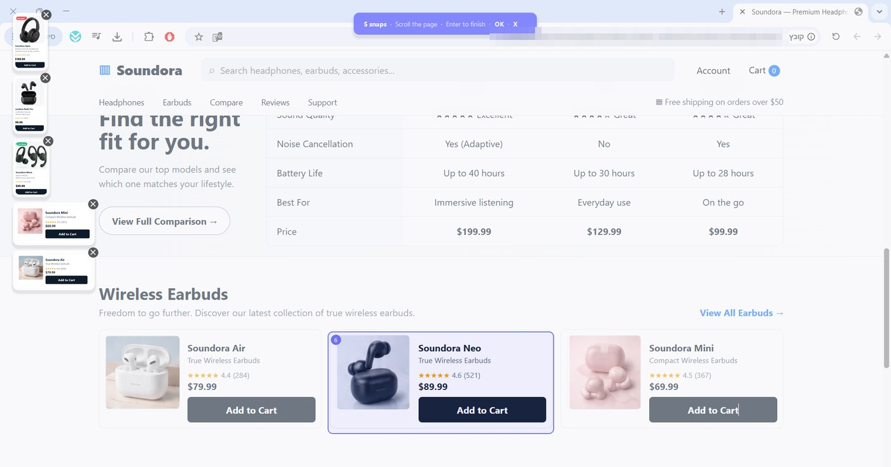
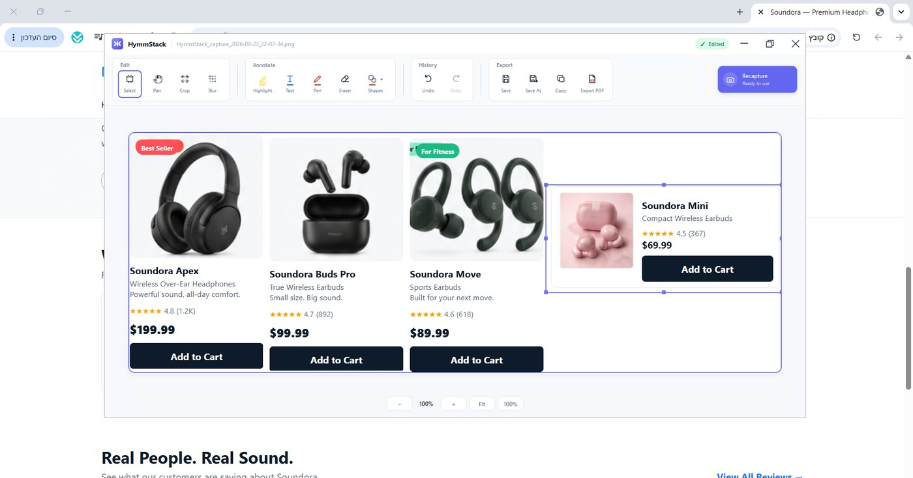

Combine multiple screenshots into one image.
Capture separate areas from different windows, apps or steps, then arrange them into one clear composition for a case file, article, report, support reply, bug report or everyday sharing. Blur what's private, add notes, and paste it wherever it needs to go.
Separate captures. One clear result.
Each piece can come from somewhere else. What you send is a single image.
Capturing the pieces

The finished image

How it works.
Select an area
Capture any part of any window.
Add more
Capture another area, from the same app or somewhere else.
Combine
HymmStack turns the captures into one image.
Finish
Edit, blur, and copy or save the result.
When the information lives in different places.
Legal & professional records
Bring a message, document detail and reference from separate screens into one clear image for review or sharing.
Content, research & comparison
Combine source excerpts, references, product details, or before-and-after states into one visual summary.
Support, QA & everyday sharing
Put the steps, settings and result together in one image instead of sending several separate files.
The same editor as the rest of the family.
Blur
Hide names, emails and IDs before sharing.
Highlight
Mark what matters without hiding it.
Text
Add labels and notes on the image.
Pen and eraser
Draw freehand, and erase what you don't need.
Shapes
Arrows, boxes and circles to point at things.
Crop
Trim the combined image to what matters.
Undo and redo
Try things without worrying about mistakes.
Copy, save or PDF
Paste straight into a ticket or chat, save a file, or export a PDF.
Private by design.
Your screenshots stay on your computer. Screens often show things that shouldn't leave the building: customer data, internal systems, private chats. HymmShot tools are built so that none of it has to.
- Capture and editing happen locallyYour images are created and edited on your own Windows PC.
- No account. No cloud upload.Nothing is sent to a service to process your screenshots.
- Blur sensitive details before sharingCover names, emails, IDs and passwords while the image is still yours.
- Installed and updated through Microsoft StoreAn official, signed install, kept up to date by Windows.
HymmStack questions and answers
What does HymmStack do?
HymmStack lets you capture several areas, one after another, and combines them into a single image. It's the quickest way to show something that is spread across different windows, steps or parts of the screen.
How is HymmStack different from HymmScroll?
HymmScroll captures one area that continues below the screen, by scrolling through it. HymmStack captures separate areas, from anywhere, and puts them together. Use HymmScroll for one long thing, and HymmStack for several separate things.
How do I combine multiple screenshots into one image on Windows?
Windows doesn't have a built-in way to do this; you'd normally paste screenshots into an image editor and arrange them by hand. With HymmStack you capture each area in turn, and it builds the combined image for you.
Can I capture from different windows and apps?
Yes. HymmStack works like a regular screenshot: anything you can see on screen, in any app or website, can be captured. Each capture can come from a different place, so you can combine a message, a document detail and a reference number — or a form, an error and a log — into one image.
Can I edit the combined image?
Yes. HymmStack includes the HymmShot editor: crop, blur, highlight, text, pen, eraser, shapes, and undo and redo.
Can I hide private information?
Yes. Use blur on names, email addresses, IDs or anything else that shouldn't be shared, before you save or copy the image.
How do I share the result?
Copy it straight to the clipboard and paste it into a ticket, email or chat, save it as an image, or export it as a PDF.
Does HymmStack upload my screenshots?
No. Capturing and editing happen locally on your Windows PC.
Where can I download HymmStack?
HymmStack is available on Microsoft Store. It installs and updates like any other Store app.
Need one long scrolling capture instead?
Use HymmScroll to capture content that extends beyond the screen.